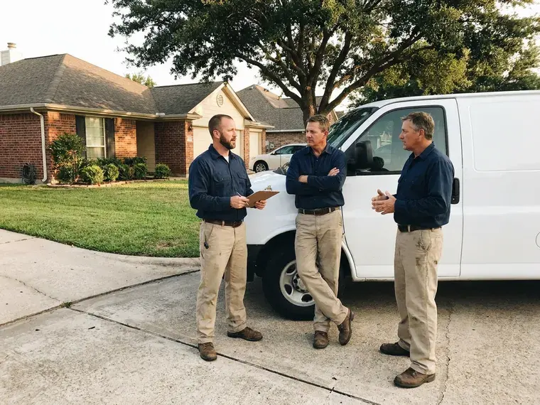

Septic Tank Repair in El Cajon, CA
FKM Plumbing offers complete septic tank repair throughout El Cajon, CA. We make sure your home's wastewater system operates without a hitch.
- Guaranteed Work
- Fast Septic Diagnostics
- Permit Coordination
- Guaranteed Workmanship
Septic backing up? Get it repaired the right way in El Cajon, CA.
We inspect the tank, lines and field, then quote a firm price before repairs.
Septic Tank Repair in El Cajon, CA for Tanks, Pumps, Lines and Leach Fields
When septic tank problems arise in El Cajon, CA, FKM Plumbing is your go-to local expert. We understand the challenges of septic systems in the Southern California climate and provide lasting repairs that comply with all local codes.
Our expertise includes:
- Effluent pump, float switch and high water alarm service
- Camera inspection of building sewer and distribution lines
- Diagnosing and repairing septic tank leaks.

Additional Plumbing Repair Services in El Cajon, CA
We offer expert plumbing repair services across El Cajon, CA to fix leaks, restore flow, and keep your system running smoothly.


Customers
Why Choose FKM Plumbing for Septic Tank Repair in El Cajon, CA?
Septic problems rarely fix themselves, and waiting can turn a $400 repair into a full field replacement. We act quickly to protect your system and your property.
- Permit Savvy, We coordinate with local environmental health officials when a repair requires approval.
- Whole System View, We inspect from the house cleanout through the tank to the disposal field.
- Code Compliance, All septic tank repairs are performed fully to Southern California plumbing codes and local El Cajon regulations, ensuring safety and legality.
Citywide Coverage
No matter where you are located within El Cajon, our skilled team is available to provide prompt and professional septic tank repair services. We cover the entire area so no homeowner is left with a failing system.
Experienced Team
Each FKM Plumbing technician is highly skilled in diagnosing and repairing complex septic system issues. You can trust our professionals to handle your septic tank with precision and expertise, ensuring a long-lasting fix.
Safety-First Approach
Safety is our first concern in all our septic tank repair operations. We strictly adhere to all safety protocols and use appropriate personal protective equipment to protect both our team and your property during the repair process.
Trusted Certified El Cajon Plumbing Services Professionals
At FKM Plumbing, we take pride in providing certified plumbing services throughout El Cajon, CA. Backed by recognized industry credentials, our experienced plumbers combine technical skill with genuine customer care. Whether it is repair, installation, or maintenance, we follow strict safety and quality standards to deliver long-lasting results you can trust.
Call Us Now PHCC Plumbing Contractor Recognition
PHCC Plumbing Contractor Recognition Better Business Bureau (BBB) Accreditation
Better Business Bureau (BBB) Accreditation Angi Certified Pro
Angi Certified Pro ISO 9001 Quality Management Certification
ISO 9001 Quality Management CertificationReliable Septic Tank Repair Services in El Cajon, CA
Leach Field Repair in El Cajon, CA
Soggy ground, strong odors or lush grass over the field can signal a struggling disposal area. Causes include clogged distribution pipes, a crushed distribution box or soil sealed by solids. We jet clean lines, replace distribution boxes and assess whether the field can be restored. If replacement is needed, we explain the design and permit steps.

Septic Inlet Line Repair in El Cajon
The line from your house to the tank can crack, sag or separate from soil movement and roots. Symptoms include gurgling drains and backups even after pumping. We camera the line to find the problem and repair or replace the damaged section. A cleanout near the tank makes future maintenance simpler.
Septic System Code Compliance in El Cajon, CA
Septic tank repairs often require compliance with local and state plumbing codes that protect public health and the environment. FKM Plumbing makes sure all our septic repair work in El Cajon, CA meets or exceeds these strict regulations. We handle any required permits and inspections, so your repaired system is fully compliant and operates safely for years to come.
Septic Pump and Alarm System Repair in El Cajon
Many modern septic systems, especially those on sloped properties or with advanced treatment units, rely on a working septic pump and alarm. When your pump fails or the alarm sounds, it indicates a serious issue. Our team can repair or replace faulty pumps, floats and electrical components so your system reliably moves wastewater to the drain field. We service all major pump brands for homes in El Cajon.
Alternative Septic System Repair in El Cajon, CA
Some properties use aerobic treatment units or other alternative systems because of soil or lot size limits. These systems have air pumps, timers and alarms that need regular service. We repair aerators, replace diffusers and troubleshoot control panels. We also help keep maintenance records required by your permit.
Septic Repair Cost Comparison in El Cajon, CA
Baffle or tee replacement often costs $300 to $900, and effluent pump replacement typically runs $900 to $2,000. Inlet line repairs range from $800 to $3,000 depending on depth and length. Leach field restoration or replacement can cost $5,000 to $20,000 or more. We help you choose the option that fixes the problem at the lowest long-term cost.
Baffle Repair and Replacement in El Cajon, CA
The inlet and outlet baffles inside your septic tank are vital for separating solids from liquids and keeping them out of the drain field. Over time, these baffles can deteriorate, leading to system failure. FKM Plumbing provides professional repair and replacement of damaged septic tank baffles, using durable materials that withstand the harsh conditions within the tank and protect your entire septic system in El Cajon, CA.

Emergency Septic Repair in El Cajon
Sewage backing up into tubs or floor drains is a health hazard that needs prompt attention. We respond to emergency septic calls, find the blockage and restore flow. That might mean clearing a line, replacing a failed pump or arranging pumping if the tank is full. We then explain what caused the backup and how to prevent it.
Septic Tank Repair Near Me in El Cajon, CA
Most homes in Southern California sit on concrete slabs, so slab leaks often show up as warm floors, damp carpet, or an unexplained jump in the water bill. Our crew knows how to work with these conditions. We design repairs that hold up against them.
When you search for 'septic tank repair near me' in El Cajon, CA, you want a local expert who understands your community and can respond quickly. FKM Plumbing is rooted in the Southern California region, providing personal service that larger companies cannot match. We are proud to be your neighborhood plumbing solution.
FKM Plumbing at a Glance
- Fully licensed plumbing team covering El Cajon, CA
- 24/7 emergency service with same-day scheduling
- Upfront, flat-rate pricing before work begins
- 4.8-star rated by 754+ Southern California customers
El Cajon Map
El Cajon Information
- Population
- 102,991
- Area codes
- 619/858/442
- Service area
- El Cajon and communities within 40 miles
- Nearby
- San Diego, Chula Vista, Escondido, San Marcos
Most homes in Southern California sit on concrete slabs, so slab leaks often show up as warm floors, wet carpet, or an unexplained jump in the water bill. Timely septic tank repair is key for homes in El Cajon, CA, where soil and weather both affect how well a system works.
Expert Services
Trust our professionals for reliable FKM Plumbing solutions in El Cajon, CA.
Our Specialized Plumbing Services in El Cajon, CA
At FKM Plumbing, we provide a complete range of plumbing services across El Cajon, CA. From leak detection to full system installations, our team ensures fast, precise, and affordable service for both residential and commercial properties. Explore our core services below:


How Our Septic Tank Repair Process Works in El Cajon, CA
At FKM Plumbing, we follow a clear and efficient process so your septic tank repair in El Cajon, CA is handled professionally and effectively.
Request a Quote
Contact FKM Plumbing by calling (213) 871-0701 to schedule your septic tank repair service. Our friendly staff will gather initial information about your issue and set up a convenient appointment time.
On-Site Diagnosis
Our licensed technician will arrive at your El Cajon property to perform a thorough inspection of your septic system. We use advanced tools, including sewer cameras, to accurately pinpoint the cause and extent of the problem.
Expert Repair
Based on the diagnosis, we will present you with a clear explanation of the issue and transparent pricing for the recommended repairs. Once approved, our team will carry out the repair with precision and adherence to all local codes.
Frequently Asked Questions About Septic Tank Repair in El Cajon
Common repairs such as baffle replacement run $300 to $900, and effluent pump replacement usually costs $900 to $2,000. Leach field work can range from $5,000 to $20,000 or more. We provide a firm price after inspection.
The length of septic tank repair depends on the complexity of the issue. Simple repairs like a baffle replacement might take a few hours, while more extensive work such as drain field repair or pipe replacement could take one to several days, especially if excavation is involved. Our technicians will provide an estimated timeline during the diagnosis.
Key signs include slow drains, gurgling toilets, sewage odors inside or outside your home, oddly lush or soggy spots in your yard near the septic tank or drain field, and sewage backups into your home. If you notice any of these, it is important to call FKM Plumbing promptly to prevent further damage.
Most additives are not needed for a healthy system. Regular pumping, water conservation and keeping grease and wipes out of drains do much more.
To extend your septic system's life, keep up regular pumping every 3 to 5 years, avoid flushing non-biodegradable items, limit harsh chemical use, conserve water and keep vehicles off the drain field. Regular inspections by FKM Plumbing can also catch small issues before they become major problems.
FKM Plumbing services and repairs all major septic tank brands and types, including concrete, fiberglass and plastic tanks and components from manufacturers like Infiltrator Systems, Presby Environmental and Advanced Drainage Systems. Our technicians are experienced with various septic system designs, from conventional gravity systems to aerobic treatment units.
To prevent future septic tank problems, limit water usage, avoid flushing non-biodegradable items, use septic-safe cleaning products, don't pour grease down drains and schedule regular septic tank pumping every 3 to 5 years. Regular inspections can also catch issues early.
The length of a septic tank repair depends on the complexity of the issue. Simple clog removals might take a few hours, while more extensive repairs like drain field work could span several days. We will provide an estimated timeline during our first assessment.
What People Are Saying About Our Plumbing Experts?

Sofia M.
Two new toilets installed in one visit, no mess left behind, and the tech even adjusted a faucet he noticed was dripping. Fair pricing and really friendly.
Toilet Installation · Escondido, CA
Daniel K.
A pipe burst at 11 pm and they actually answered. The plumber showed up within the hour, shut everything down, and had us back to normal the next morning. Could not ask for more.
Emergency Plumbing · El Cajon, CALaura S.
I scheduled a water heater replacement, and the team made the process smooth and affordable. The new unit works perfectly, and they cleaned up after completing the job.
Water Heater Replacement · Carlsbad, CA
James P.
Our commercial plumbing system had a leak under the sink, and FKM Plumbing handled it professionally. The plumbers arrived quickly and restored everything without disruption to our customers.
Commercial Plumbing · Chula Vista, CARobert G.
The trenchless sewer replacement saved our front yard. They walked us through the camera inspection footage first so we knew exactly what we were paying for.
Sewer Line Replacement · San Marcos, CAPatricia H.
We had a slab leak that two other companies could not find. FKM Plumbing located it in under an hour, explained our options, and the price matched the quote to the dollar.
Slab Leak Repair · El Cajon, CA